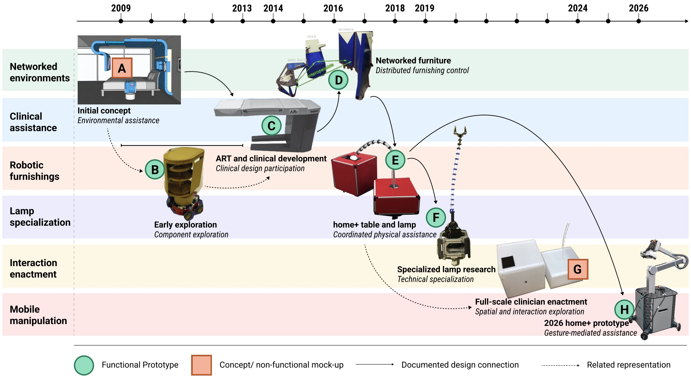
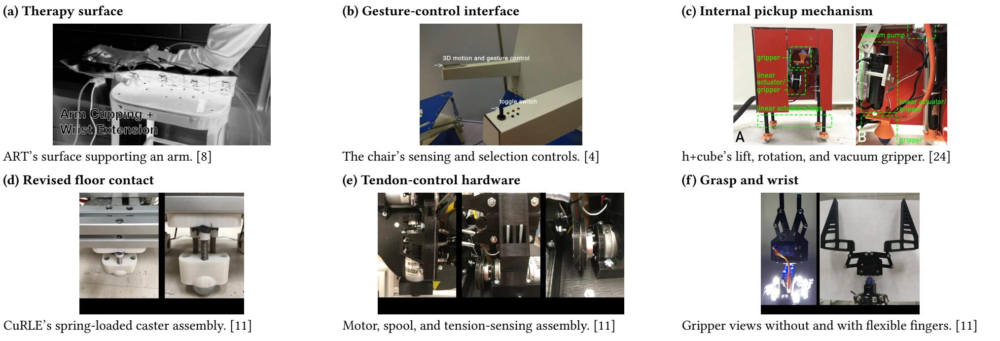

home+ research program · Current robotic system ↗
HRI 2027 submission · Under review
Seventeen Years in the MakingTracing Long-Term Design in Assistive Robotic Furnishings
Project page by Yibing Lu · Architectural Robotics Lab, Cornell University

Abstract
Human-centered robotics is often reported through individual prototypes, studies, and funded projects. While longitudinal HRI examines how interaction with robots develops over time, a complementary question concerns how a design inquiry persists as its artifacts and research conditions change. We examine this question through the 17-year trajectory of home+, a research program investigating robotic furnishings and environments for aging in place. Drawing on publications, a master’s thesis, technical and design records, prototype documentation, and written retrospective accounts from two long-term contributors, we reconstruct selected instantiations from 2009 to 2026.
Rather than interpreting the trajectory solely as successive versions of one robot, we examine relationships among changing realizations of a continuing inquiry. The analysis identifies continuity that does not depend on preserving a single artifact, including branching and re-convergence, shifts in the unit and fidelity of design, technical specialization, and repeated re-embodiment. The retrospective accounts further highlight how researcher handoffs combine reconstruction with redirection, how opportunities enable continuation while shaping its direction, and how institutional moves require rebuilding local capacity for HRI. Together, these findings characterize long-term design as the maintenance and revision of an inquiry across changing material and organizational conditions. We discuss implications for documenting transitions, supporting inheritance across researcher generations, and distinguishing persistence from evidence of assistive success.
Research question
What becomes visible about human-centered robot design when an inquiry persists across multiple generations of artifacts and research activity?
The paper examines the continuity of an assistive-robotics inquiry across changing physical forms, technical concerns, researchers, and institutions. It reconstructs relationships among successive builds and parallel research strands.
A design trajectory, 2009–2026
The reconstruction connects the initial comforTABLE concept, early nightstands, clinical robotic tables, networked furnishings, specialized continuum lamps, full-scale interaction enactments, and the current mobile-manipulation prototype.
Approach
Documentary reconstruction
Publications, a master’s thesis, technical records, photographs, and diagrams connect what was proposed, built, and evaluated.
Retrospective accounts
Two long-term contributors responded to twelve questions about handoffs, funding, institutional moves, and changes in direction.
Cross-episode analysis
A source-to-claim record connects interpretations with documentary passages, attributed accounts, counterevidence, and unresolved questions.
Mechanisms and interaction across realizations

Six lessons for long-term HRI design
A continuing inquiry can change its unit of design.
The assistive ambition remained connected while attention moved among networked environments, individual furnishings, and technical subsystems. Continuity can persist through changing scope.
Re-embodiment combines inheritance with redesign.
New builds reused selected components and control knowledge while adapting mechanisms to changed physical conditions. Retained software still required retuning and physical testing.
Fidelity follows the question, not the technical stage.
Full-scale mock-ups after functional prototypes allowed clinicians to explore size, proximity, interfaces, and movement. Different representations made different interaction questions investigable.
Handoffs combine reconstruction with redirection.
Incoming researchers recovered practical know-how while bringing new skills and interests. Continuing an inquiry involved both reconstructing earlier work and reconsidering its direction.
Opportunities enable continuation and redirect attention.
Student interest, recruitment, collaborations, and funding supported renewed activity while shaping the immediate agenda. The history includes interruptions and changing directions.
Institutional moves require rebuilding to conduct HRI.
Equipment, expertise, student teams, working prototypes, and coordination had to be re-established. A continuing project vision depended on rebuilding the local capacity for research.
Implications
Continuity concerns more than preserving a robot. Teams also inherit technical knowledge, design rationales, unresolved questions, and the local capacity to build systems and investigate interaction. The paper argues for documenting transitions as well as artifacts: what was retained, what required reconstruction, and which conditions supported an interaction claim.
Scope and limitations
This is a selective reconstruction of one research trajectory. The records are uneven, some build relationships remain unresolved, and the retrospective accounts come from two long-term contributors who are also coauthors. The work does not establish a complete causal history or standardized performance benchmark.
Seventeen years refers to the history of design activity. It does not establish continuous household deployment or demonstrated long-term assistive benefit. The current prototype still requires tuning and evaluation with intended users.
Citation
The manuscript is under review. The download is the submitted, anonymized version.
@unpublished{lu_homeplus_longterm,
author = {Lu, Yibing and Hirsh, Haym and Bhattacharjee, Tapomayukh
and Walker, I. and Green, Keith Evan},
title = {Seventeen Years in the Making: Tracing Long-Term Design
in Assistive Robotic Furnishings},
note = {Submitted to HRI 2027; under review}
}